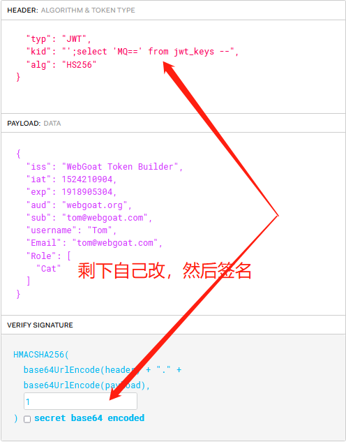
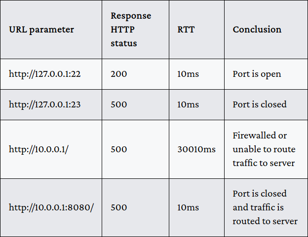

[NOTE] WebGoat
前言
是对WebGoat靶场的学习笔记
不会每个小内容都记下来
只会写写我感兴趣、不太理解或者是觉得重要的部分
这逼靶场看了N边了草
CIA
- Confidentiality（机密性）
- Integrity（完整性）
- Availability（可用性）
常见编码形式
BASE64编码
略URL编码
就是GET传参时出现在URL里的诸如“%20”之类的符号HTML编码
就是防止“<、>”之类的被解析成HTML元素，即HTML实体编码，诸如“<、>”UU编码
有这么点类似于BASE64编码，常用于邮件附件转码XOR编码/加密
异或编码，需要就是原文和密钥做异或，输出密文（对合操作）
常用于数据库加密存储密码等敏感字段{xor}BASE64字符串
{xor}Oz4rPj0+LDovPiwsKDAtOw==
一段由异或编码处理过的信息，而且是用IBM的WebSphere工具中的编码规则处理的
从网上找到专门解码WebSphere规则的应用进行解码：http://www.sysman.nl/wasdecoder/
OpenSSL使用
自己生成公私钥对
根据私钥生成公钥
1
openssl rsa -in rsa_private_key.pem -out rsa_public_key.pem -pubout
从私钥提取模数（modulus）
1
openssl rsa -modulus -in rsa_private_key.pem -out modulus -noout
或
1
openssl rsa -in ./privatekey.pem -modulus
使用私钥签名（下面是对模数签名）
1
openssl dgst -sign rsa_private_key.pem -sha256 -out modulus.signature modulus
或
1
2echo -n {模数} | openssl dgst -sign ./privatekey.pem -sha256 -out ./dgst.txt
base64 ./dgst.txt > resultBASE64编码转换
1
base64 ./dgst.txt > result
对某一加密字符串进行指定解密
1
echo {BASE64 String} | openssl enc -aes-256-cbc -d -a -kfile ~/TEMP/keyfile
docker安全
不要把用户密码文件（例如系统用户密码）放到docker镜像中
因为可以使用docker的cp命令无视权限将密码文件（如shadow、passwd）放到容器外面
然后可以外部修改root的密码，再cp回去覆盖，即可做到任意重置容器用户密码
SQL安全
- DML (Data Manipulation Language)
SELECT、UPDATE、DELETE
大概是数据操作语言 - DDL (Data Definition Language)
CREATE、ALTER、DROP
大概是数据定义语言 - DCL (Data Control Language)
GRANT、REVOKE
大概是权限控制语言
SQLi
就是SQL injection
关于NOT、OR、AND的计算优先级顺序：
NOT>AND>OR
所以有如下例子：
1 | SELECT * From user_data WHERE Login_Count = 1 OR 1 = 1 AND userid= 1 |
- 先计算“1 = 1 AND userid= 1”，得false
- 再计算“Login_Count = 1 OR false”，得false
- 所以总体为false，注入失败
再有如下例子：
1 | SELECT * From user_data WHERE Login_Count = 1 AND userid= 1 OR 1 = 1 |
- 先计算“Login_Count = 1 AND userid= 1”，得false
- 再计算“false OR 1=1”，得true
- 所以总体为true，注入成功
元字符“;”
构造查询链/命令链去修改数据，破坏完整性（确保SQL格式语法正确）
使用“%”的SQL搜索语句
1 | SELECT * FROM access_log WHERE action LIKE '%" + action + "%' |
尝试主动闭合：XXX%’
SQL特殊字符

UNION&JOINS
基本上都是用于合并查询结果，或者是用于一次查询获取多个结果
区别在于：
- UNION要求多个SELECT之间查询的字段数目和类型都是一样的
- JOINS使用两份数据之间的某种联系来合并多行
使用union可以使用‘a’、’b’、’c’或1、2、3等来代替空缺的字段
从而使多个select之间字段数目和类型都相同
例如：
1 | SELECT * FROM user_data WHERE last_name = '' UNION SELECT userid,user_name, password, 'a', 'b', 'c', 1 from user_system_data --' |
一个盲注payload&BP爆破
cluster bomb模式，第一个payload设置number、第二个设置字符集，注意限速，不然容易出错
1 | username_reg=tom'+and+substr(password,$1$,1)='$1$' --&email_reg=tom%40webgoat.org&password_reg=123456&confirm_password_reg=123456 |
SQLi防御
Immutable Queries（静态查询与预编译）
预编译
statement & prepared statement
- ‘?’可用于占位符
- Placeholders can prevent that the users input gets attached to the SQL query resulting in a seperation of code and data
- Prepared statements are compiled once by the database management system waiting for input and are pre-compiled this way
- Pre-statement会预编译，然后等待参数，速度上比SQL拼接再编译执行要快
存储过程
存储过程也要合理使用才安全，对比如下：

一个JAVA使用预编译的例子：

或者代码如下：
1 | String userName = "peter"; |
最小特权原则
- 连接数据库的用户权限最小——应用很少需要对表或数据库的删除权限
- 数据库用户应该限制模式访问
- 确定数据库用户的读写权限
- 基于访问的多个连接（池）
- 验证查询应“只读”
- 数据修改查询应“读写”
- 存储过程调用应“执行”
预编译的问题
即使后端做了预处理或者其他操作来防止SQL注入，前端也依旧需要输入过滤
防止XSS、信息泄露等其他安全威胁
预编译不能完全防止SQL注入
原因….感觉复杂，一大段话：
This means an orderExpression can be a selectExpression which can be a function as well, so for example with a case statement we might be able to ask the database some questions, like:
So we can substitute any kind of boolean operation in the when(….) part. The statement will just work because it is a valid query whether you use a prepared statement or not. An order by clause can by definition contain an expression.
进一步缓解：
If you need to provide a sorting column in your web application you should implement a whitelist to validate the value of the order by statement. It should always be limited to something like ‘first name’ or ‘last name’.
后面有例子：
可以选择某个列进行排列，发现会发送GET请求，有个column参数
改成payload：column=(CASE WHEN (TRUE) THEN ip ELSE hostname END)
看看会不会按ip排列，从而判断有没有注入
然后构造WHEN()里面的表达式，形成类似于盲注的注入情况（实际上就是排序注入）
日后补充：因为order by后续需要接字段名，预编译的话会自动加引号，所以order by后续很少使用预编译，不然会爆语法错误
总之就是，预编译与order by相性不好，排序注入存在可能
路径遍历
dot-dot-slash：../
URL-encoding：%2e%2e%2f
双重URL-encoding
关键还是要对文件读取的各个接口敏感点
观察怎么利用，注意防御对策
Zip Slip vulnerability
一个提取zip文件时产生的漏洞，可以利用路径穿越去覆写一些常见的命令例如“ls”
受害者每次执行ls，都会将结果先发送给攻击者
最终攻击者可以RCE
比较经典的代码：
1 | File destinationDir = new File("/tmp/zip"); |
destinationDir参数可以被路径穿越
大概就是，开发者用zip里面的文件来上传，但是可以控制里面的文件所解压的路径？
建议多看几遍
认证失效
绕过安全问题的一个方法：删掉安全问题参数或者将安全问题参数的序号改一改
简单提及一下cookie、session以及token的一个观点
cookie侧重于客户端行为，多用于记录用户设置、行为等，多存储于客户端，又分为内存cookie（短时cookie）和硬盘cookie（长时cookie）
session和token侧重于服务端行为，注重身份认证
JWT
JSON Web Tokens
使用HMAC算法或公私钥对进行签名
基本使用流程图：

后续客户一般在请求头中的“Authorization”字段里加上JWT
基本格式：{header}.{body}.{sign}
每个部分都经过base64编码，且各自最后没有“=”，最后再用“.”相连
BASE64 URL
在HTTP传输过程中，Base64编码中的”=”,”+”,”/“等特殊符号通过URL解码通常容易产生歧义因此产生了与URL兼容的Base64 URL编码
在Base64 URL编码中，**”+“会变成”-“，”/“会变成”_”，”=”会被去掉**，以此达到url safe的目的
一些风险点
- header中的加密算法字段可以修改为“none”，同时删除签名字段后，该JWT可能会绕过一些服务器的签名检查
- 一个“RS256”(RSA, 2048位)参数值可以被更改为“HS256”(HMAC, SHA-256)，并且一些库会尝试使用HMAC- sha256和使用RSA公钥作为HMAC共享密钥来验证签名(参见[McLean]和[CVE-2015-9235])
基本上发生的事情是，库只解析令牌，而不验证令牌创建过程中使用的加密操作
JWT签名密钥爆破
命令：
1 | hashcat -m 16500 jwt.txt -a 3 dict.txt |
- -m 16500：这里的16500对应的就是JWT的爆破
- -a 3：代表蛮力破解
- -w 3：可以理解为高速破解，就是会让桌面进程无响应的那种高速（可省略）
- jwt.txt：要求破解的JWT文件
- dict.txt：字典文件
要是JWT有期限字段，可以尝试修改有效期使其生效
其实有时候不一定要爆破，尝试修改加密算法为“none”，然后删掉后面签名
Token的使用
access token & refresh token
两者的区别
注意事项：
- 注意重点保护refresh token，因为access token生成需要鉴别它
- 注意每个access token应该只与一个refresh token对应，否则攻击者可能通过自己的refresh token生成别人的access token（越权）
- 注意检查refresh token的使用情况（次数、频率、时间、地理位置等），不对劲则应要求用户重新认证并重新获取refresh token
啥时候用JWT？
WebGoat建议是server与server之间使用，普通Web应用使用普通cookies更好
Tom&Jerry的题
这题要用组合拳
JWT头部的kid字段存在SQL注入（这我咋知道啊）（看源码？）
大概是用这个字段从数据库中选择密钥要进行加密签名
所以可以修改为“select ‘1’ ….”，这样密钥就会变成自己设置的‘1’，从而可以控制JWT
（注意BASE64编码，要结合源码）
启示：注入不要拘泥于明文字符，可能有编码后再注入
JWT使用注意事项
- 锁定算法，确保用户不能修改算法
- 当使用对称密钥签名时，请确保密钥的长度
- 尽量不要在JWT主体中添加敏感信息，除非经过加密
- 请确保足够的测试案例被使用，使用第三方测试服务并不意味自己无需测试；请保证非法的JWT一定是无效的
密码重置
账户信息输出
一些比较敏感的网站，其用户是否存在也是敏感的
因此页面应该尽量显示少的信息，而不是直接输出“该用户/邮箱已注册/存在”、“用户/邮箱不存在”
对于重置密码的邮箱输入，应无论邮箱是否存在都输出“邮件已发送”
安全问题
aka knowledge-based authentication (KBA)
安全问题在数据库中的存储也应该是加密存储的
即应和密码采用同样等级甚至是更高等级的存储
安全问题应该设定锁定次数，防止一些简单问题答案被爆破
The “perfect” security question should be hard to crack, but easy to remember. Also the answer needs to fixed, so it must not be subject to change.
接下来列举了一些常见的安全问题，并且展示了它们为什么不如想象中的好
- 因为容易从别的社交媒体中找出（社工）
- 最喜欢的动物
- 初吻对象（或直接猜名字）（540
- 童年居住的街道名（或者直接就是现在居住的地方）
- 第一份工作的地点或城市（LinkedIn、Facebook或国内求职网站等）
- 出生城市（或直接猜）
- 申请过但没有成功的公司/大学（可以直接搜索所在城市公司/大学）
- 小时候的花名
- 因为很容易猜（爆破）
- XXX的出生月份
- 哪只手戴手表（？？戴牛子上）
- 童年英雄
- 最喜欢的颜色
- 很难记（可用性差）
- 啥时候生，精确到分秒
- 三年级最喜欢老师的姓氏（？？？或许可以直接猜）
密码重置链接
应该满足以下要求：
- 使用独一无二的随机token作为URL的一部分（防止DOS重置任意用户密码）
- 应该只能使用一次
- 应当设置链接有效期
密码重置链接要当心越权的问题
就是要当心唯一标识的字段可以被攻击者获取
（例如修改host，伪造假链接，引诱受害者点击，从而获取到字段）（CSRF）
从而可以修改链接，达到任意重置密码的目的
安全密码
两个方面：密码本身的强度、密码的存储安全
如何安全存储密码
- 使用安全信道或加密信道传输密码
- 要求能抵御脱机攻击
- 哈希存储加盐
- 使用安全哈希
- memory hard key derivation function
- high cost factor
- 看原文去啊草
敏感信息泄露
水
XXE
建议自己先去了解一些XXE相关
（了解那么久还是不会啊草，自己复现又是各种问题啊草）
分类
- Classic
in this case an external entity is included in a local DTD
（外部实体包含在本地DTD中） - Blind
no output and or errors are shown in the response
（无任何回显） - Error
try to get the content of a resource in the error message
（在错误输出中获取资源信息）
基本例子
1 |
|
后面&js;就会被替换成passwd里面的内容
The extra document type definition(DOCTYPE) is something you can always add to the xml document and if the parser settings are enabled to allow external entities to be processed you are off to a good start for finding a XXE injection.
”SYSTEM”关键词导致XML解析器可以从本地文件或者远程URI中读取数据。所以攻击者可以通过XML实体传递自己构造的恶意值，是处理程序解析它。当引用外部实体时，通过构造恶意内容，可导致读取任意文件、执行系统命令、探测内网端口、攻击内网网站等危害
第一道题目
原POST的数据：
1 | <comment><text>try</text></comment> |
替换成：
1 | <comment><text>&js;</text></comment> |
效果：

但是没过，麻了
哦哦，原来是文件系统的根目录（the root directory of the filesystem），不是root目录
代码审计找XXE
呃，有点难
第二道题目
有点像是现实中，就临时修了下漏洞
一开始传输的是json数据（Content-Type: application/json），提交xml显示说失败
然后修改为Content-Type: application/xml，再提交xml就成功了
类似于替换新接口，但是原接口还启用着
（json <-> xml）
现实情况可以考虑先修改传输类型，看看会不会报错
在判断有无XXE
更真实的情况：
- 先修改传输类型看看报错（
Content-Type） - 传输基本XML数据，如“<text>hello</text>”，看看报错
- 根据报错信息，逐步完善XML结构，如“<comment><text>hello</text></comment>”
- 如能成功，再尝试XXE
启示：防护要全面，旧风险要尽可能地清除
XXE DOS
代码如下：
1 |
|
解析：
总之就是迭代定义
直接让这个XML数据耗掉服务器大量内存（3 gigabytes，理论上）
从而形成DOS
Blind XXE
有时候会看不到回显，可能是这次XXE攻击纯粹地没有回显，又或者是尝试读取的非法XML包含了非法字符导致解析器失效
这种XXE攻击和SQL盲注类似
然后是上演示，不太好理解
最后总结：
所以有了XXE，我们可以ping我们自己的服务器，这意味着XXE注入是可能的
因此，通过使用XXE注入，我们基本上能够达到与一开始使用curl命令时相同的效果
对应题目：
还是不太懂哈
事先准备如下文件放到攻击者服务器

1 |
然后注入如下的XXE payload：
1 | <comment><text>&attack;</text></comment> |
然后就可以在攻击者的服务器中发现如下的记录：
其中text参数的值就是目标信息

初步分析下，这是POST的内容：

然后根据替换规则，会变成下面的样子？

所以会向攻击者服务器（landing）发送GET请求，并通过file参数泄露信息？
盲注在于，信息不会直接回显到页面上，需要另外设置接收信息的地方
这次是攻击者的服务器log
其他人博客的分析：
第一步包含本地文件，把内容存在file中
第二步远程包含webwolf上的dtd
第三步解析webwolf上的dtd，把file内容赋值给txt，作为参数发给webwolf
总之就是难搞
XXE 防御
JAVA里面可以设置XML解释器完全忽视DTD：

或者是指示XML解释器仅忽视外部DTD：

或者是进行验证：
- 对Content-type和Accept报头进行验证
- 不要简单地依赖框架来处理传入请求
- 如果客户端指定了一个不合适的accept报头，返回一个’406/Not Acceptable’
静态代码分析
一个工具：SonarQube
可以对代码进行静态分析，从而发现潜在的XXE漏洞
不安全的对象直接引用
Insecure Direct Object References（IDOR）
直接对象引用
Direct Object References
指应用程序使用客户端提供的输入来访问数据和对象
即可能存在的任意资源访问风险
如：
不仅是GET，其他方法也有可能导致任意资源访问的问题
容易导致越权或敏感信息泄露问题
测试越权最好能控制多个账号
- 同等级/权限的不同账号
- 不同等级/权限的不同账号
这里有一些抵御越权攻击的实现：

除了修改请求资源的字段之外
直接访问某不该被访问到的URL也算是越权
一个猜访问字段/备份URL的例子：
寻常访问资源的请求URL是：/WebGoat/IDOR/profile
访问后返回一些配置文件，其中有个userId
然后就可以猜测如下的备份配置访问URL：/WebGoat/IDOR/profile/{userId}
然后就有越权读取任意用户配置文件风险
有时不好猜，可能要FUZZ一波（封IP警告）
防御措施：从endpoint（目的？）出发
- 列出访问控制说明文件，审查访问控制规则
- 做好访问日志记录，方便审查问题
- 使用间接访问（Indrect References），例如使用hash、编码或其他方法处理后的值访问
- 使用签名鉴权，如token、JWT等
应用层访问控制缺失
Missing Function Level Access Control
和IDOR的区别：
- IDOR更多地是强调水平/垂直的访问控制/越权问题
- 应用层访问控制缺失强调的是“应用层功能暴露”（？）
有一个例子
大概就是曾经有一些网站，试图使用javascript来在UI中隐藏一些管理员功能
具体可以从以下方面入手去找：
- HTML或javascript元素
- 被注释掉的元素
- 通过CSS隐藏掉的部件
题目
根据上一题的提示，UI隐藏了两个菜单组件，对应URL如下：
- /users
- /config
这是原始提交答案的数据包：

然后根据提示，可以试试将方法改成GET
同时注意Content-Type改为’application/json’（会影响到响应结果，经常忘哈）
然后，猜一猜接口路径，一路试下去，得到这个：

即返回正确结果
或者有另一种做法：
OK, here it is.
First, create an admin user …
Change the method to POST, change the content-type to “application/json”.
And your payload should look something like:
Now log in as that user and bring up WebGoat/users.
Copy your hash and log back in to your original account and input it there to get credit.
XSS
概念
允许一些（组合的）html/script作为输入，而没有检测或过滤
最广泛的Web安全漏洞
“富网络应用”的盛行，使得高权限的JS脚本变得普遍，给XSS提供了攻击点
可通过浏览器控制台调用来查看本地cookie
1 | alert(document.cookie) |
可能的XSS位置
- Search fields that echo a search string back to the user
- Input fields that echo user data
- Error messages that return user supplied text
- Hidden fields that contain user supplied data
- Any page that displays user supplied data
- Message boards
- Free form comments
- HTTP Headers
总之反射型XSS可能存在的地方一定要有能回显的地方
XSS的可能危害
盗取cookies
创建错误请求
在页面上创建收集凭证的恶意域（fields）
重定向到恶意页面
伪造合法用户请求
盗取秘密信息
通过active script在终端系统执行恶意代码
在页面插入危险/反动言论或图片
<img src="http://malicious.site.com/image.jpg/>增加用户受到钓鱼攻击的风险
在URL中使用有效域
XSS的类型
反射型
用户的恶意请求回显到浏览器上
恶意内容经服务器响应后写入到页面
社会工程学是必须的
在浏览器中使用从用户处继承的浏览器权限运行？
Runs with browser privileges inherited from user in browser
存储型
- 恶意内容存储到服务端，返回给页面的所有用户
- 不太需要社会工程学
DOM-based（本质上是反射型）
- 用户的恶意请求经用户端脚本以HTML形式写入到页面中
- 在浏览器中使用从用户处继承的浏览器权限运行？
反射型XSS的场景
- Attacker sends a malicious URL to victim（所以要社工）
- Victim clicks on the link that loads malicious web page
- The malicious script embedded in the URL executes in the victim’s browser
- The script steals sensitive information, like the session id, and releases it to the attacker
- Victim does not realize attack occurred
反射型XSS题目
主要是教教怎么找页面中的注入点
可使用“alert()”或者是“console.log()”方法
发现会把信用卡号作为字符串回显
就把卡号改为“<script>alert(“XSS”)</script>”
成功
这种恶意脚本中没有指向外链，只起本地作用的叫“Self XSS”
反射型和DOM-based
DOM-based只是另一种形式的反射型
两者都是通过特殊链接触发，并反映到浏览器上
不同之处在于：DOM-based的payload永远不会去到服务端，只会在客户端起作用
一个场景：
Attacker sends a malicious URL to victim
Victim clicks on the link
That link may load a malicious web page or a web page they use (are logged into?) that has a vulnerable route/handler
If it’s a malicious web page, it may use it’s own JavaScript to attack another page/url with a vulnerable route/handler
The vulnerable page renders the payload and executes attack in the user’s context on that page/site
Attacker’s malicious script may run commands with the privileges of local account
Victim does not realize attack occurred
Malicious attackers don’t use “<script>alert(‘xss’)</script>”
也就是说DOM型XXS大概旨在对受害者本地机器形成危害，不要求收集信息
一些DOM-based题目
有点难度，因为要结合Backbone、路径控制等知识
总之，提示说DOM-based XSS通常可以在客户端通过查找路径配置代码（route configurations in the client-side code）来发现
寻找可以将输入“反映”到页面的路径
在这题中，可以在路径控制程序（原文为handler）中找到一些测试代码
这里要了解WebGoat使用backbone作为主要的JavaScript路径配置库
同时这些开发过程中的测试代码被遗留在了正式产品中
这些测试代码通常是危险且易利用的
这里的URL为：
www.webgoat.local:8080/WebGoat/start.mvc#lesson/CrossSiteScripting.lesson/9
可以知道基本路径为：start.mvc#lesson
再后面的是JavaScript路径控制程序的参数
下面的任务就是找到WebGoat在开发过程中遗留的测试代码
解法
根据提示，打开浏览器控制台检查元素，发现Route控制的相关js脚本：

链接：http://www.webgoat.local:8080/WebGoat/js/goatApp/view/GoatRouter.js
审查代码，查找“test”，有发现：

得到答案，基本路径为：start.mvc#test/
下一题
进一步利用上一题发现的测试代码
直接访问路径：http://www.webgoat.local:8080/WebGoat/start.mvc#test/
然后发现后面的参数会被直接回显到页面上，考虑XSS
于是测试出下面的payload：
http://www.webgoat.local:8080/WebGoat/start.mvc#test/%3Cscript%3Ewebgoat.customjs.phoneHome()
不知为啥后面不能跟“</script>”，不然控制台里显示不出结果
答题环节
有一个推荐阅读
嗯，题目没啥特别的，过
不安全的反序列化
概念
使用反序列化在各编程语言中略有不同
如Java、PHP、Python、Ruby、C/C++
但在关键概念上是一样的
序列化：将（内存中的）对象转化成数据格式，以便存储或传输
反序列化：上述的反过程，从某种格式的数据中构建对象
如今最受欢迎的序列化数据格式是JSON，在这之前是XML
只有数据是序列化的，而代码本身不是
Native Serialization
姑且翻译为本地序列化/客制序列化
一些编程语言提供了自己的序列化功能
所使用的数据格式比一般的JSON或XML拥有更多的特性和功能
甚至可以自行指定序列化的过程
序列化/反序列化的过程以及这些特性可能会被攻击者恶意利用
从而达到DOS攻击、越权攻击以及RCE等效果
最简单的例子
一段经典Java代码：
1 | InputStream is = request.getInputStream(); |
期望获取一个AcmeObject，但在强制类型转换之前调用readObject()方法
攻击者要做的就是找到一个合适的类，来在调用readObject()时执行危险操作
攻击者可以序列化该对象，并使程序强制执行恶意操作
这个合适的类在类路径（ClassPath）中找
（因为仅能使用已包含的包的关系？）
一个危险的可序列化的Java类：
1 | package org.dummy.insecure.framework; |
针对上面的Java类，攻击者可以序列化一个恶意对象并形成RCE
Exploit如下：
1 | VulnerableTaskHolder go = new VulnerableTaskHolder("delete all", "rm -rf somefile"); |
Gadgets Chain
一个在它自己执行反序列化时执行危险操作的类（这里称之为gadget）是很少见的
但是找到一个在反序列化时会作用到其他gadget的gadget却很常见
并通常会带来更多的作用效果
一个作用到下一个，直到真正的危险操作被执行
这一串类，我们称之为Gadgets Chain
It is weird (but it could happen) to find a gadget that runs dangerous actions itself when is deserialized. However, it is much easier to find a gadget that runs action on other gadget when it is deserializaded, and that second gadget runs more actions on a third gadget, and so on until a real dangerous action is triggered. That set of gadgets that can be used in a deserialization process to achieve dangerous actions is called “Gadget Chain”.
寻找gadget来构筑可利用的gadgets chain是安全研究人员的一个热门话题
这通常需要大量的时间去阅读代码
（代码审计的工作/目标之一？）
题目
一般反序列化题目只能白盒解决？
目前来说难度偏大
开源项目直接去GitHub找源码
一般Java包可以解包？（直接改后缀为zip？）
在GitHub上定位到如下文件：

然后开始代码审计….

框中的是解答成功的代码实现
箭头定位出要反序列化的对象为一个VulnerableTaskHolder实例
利用GitHub定位到VulnerableTaskHolder.java的代码
这里的VulnerableTaskHolder类基本上是前面提到的同名类的拓展
其中的readObject()方法的关键地方如下：

指出了只能使用sleep或ping命令来使系统延迟响应（防止Goat被玩坏）
下面要做的就是
- 构造一个VulnerableTaskHolder对象
- 初始化taskAction为“sleep 6”来实现系统延迟响应
- 把这个对象序列化
- 把序列化后的数据按题目要求生成答案（具体参见源码或者前面的演示）
这里要求.java文件把包都指定为原定的org.dummy.insecure.framework
否则验证通不过
得到EXP如下：大体思路应该理解，但是token不对怀疑是包指定的部分不对，得学习一下Java的包管理
关于Java指定包与编译
例如两个.java文件都指定了如下的包：package org.dummy.insecure.framework;
那么应该在org的上级目录处进行如下的编译：javac ./org/dummy/insecure/framework/Main.java
然后这样运行：java org/dummy/insecure/framework/Main
具体的个中原理，还得再练练
完整exp如下：
1 | // VulnerableTaskHolder.java |
1 | // Main.java |
正确编译后运行，得到token：
rO0ABXNyADFvcmcuZHVtbXkuaW5zZWN1cmUuZnJhbWV3b3JrLlZ1bG5lcmFibGVUYXNrSG9sZGVyAAAAAAAAAAICAANMABZyZXF1ZXN0ZWRFeGVjdXRpb25UaW1ldAAZTGphdmEvdGltZS9Mb2NhbERhdGVUaW1lO0wACnRhc2tBY3Rpb250ABJMamF2YS9sYW5nL1N0cmluZztMAAh0YXNrTmFtZXEAfgACeHBzcgANamF2YS50aW1lLlNlcpVdhLobIkiyDAAAeHB3DgUAAAflChAJBjgf43PAeHQAB3NsZWVwIDV0AAVzbGVlcA==
不安全组件
概念
Software Supply Chain
软件供应链
现代软件生产中所使用的开源组件流（flow）

大概就是
大部分现代生产中有80%~90%都是直接采用组件构成
很少原生代码编写
组件版本迭代 × 新的开源项目 = 每年数量高达31billion的组件需求
然而有6.8%的组件存在着至少一个已知的安全问题
旧版本组件更是有三倍的安全风险
这就是为什么一些公司严格保证供应链安全的原因
（防banner泄露、隐藏所用组件、隐藏组件来源及架构）
提高供应链安全意识：
- 使用更少人使用但更好的组件供应商
- 只使用高质量的组件
- 持续追踪组件的使用时间和地方
WebGoat这里侧重强调：
- 管理依赖库的困难
- 不管理依赖库的风险
- 以及发现依赖库是否存在风险的困难
主要是要意识到【开源 ≠ 安全】，第三方代码和自己的代码一样重要
以及理解“确定和管理依赖树”在评定开源组件风险中的重要性
OWASP Top 10:2021 (A06)
Vulnerable and Outdated Components
（使用）危险及过时组件
如何减缓这类风险：
- 移除不使用的依赖、不必要的特性、组件、文件和文档
- 利用工具持续记录、检查前后端组件的版本
- versions
- OWASP Dependency Check
- retire.js
- 持续对漏洞库进行镜像
- CVE
- NVD
- 订阅所使用组件的安全问题公告
- 仅使用安全链接从官方源获取组件，优先使用通过签名检查的包
- 对不再维护或者不推出安全补丁的旧版本组件进行统计与镜像，或者是部署检测或防御系统
一个攻击场景
组件通常具有和使用其的应用相同的权限，因此组件出问题通常后果比较严重
- CVE-2017-5638
- 物联网（internet of things， IoT）（物理）组件
帮助寻找过期组件、错误配置系统以及有问题设备等的工具：
- Shodan IoT search engine
- FOFA
演示了一下jquery-ui 1.10.4存在一个可利用的XSS
OWASP Dependency check
开源第三方组件检查工具
一个部署场景：
You can add OWASP Dependency check as a plugin to the pom.xml of a Maven project for instance.
The plugin will download information from public vulnerability databases and it will check if vulnerable libraries are used and will indicate which vulnerability was reported.
As part of a development pipeline, you can instruct the plugin to fail the build if there are violations that the development team was not aware of.
Additionally you can use an xml file to waiver some of the violations.
You should do so if the mentioned vulnerability cannot be exploited in your application.
然后给出了WebGoat的实际部署情况及场景
有些时候还包括了第三方组件授权的问题，即法律、风控安全？
自行修改？组件间授权不兼容？授权范围或完整？
然后下一题，说只有在使用基于docker的WebGoat时才能做
是关于XStream的，CVE-2013-7285
总结
- 现代产品中的开源组件使用不断增加
- 开源组件来自于有着不同标准的不同库
- 安全信息和问题普遍存在
- 许可证书（License）问题很难验证
- 大多数团队不注重甚至没有组件更新策略
- 开源组件成为新的攻击维度
what to do?
- 使用自动化工具构建自己的OSS物料清单（OSS Bill of Materials）
- 在组织中针对开源代码的使用设置基线（Baseline）
- 建设开源组件风险管理策略
CSRF
Cross-Site Request Forgeries
跨站请求伪造
针对用户浏览器的“混淆代理（confused deputy）”攻击
概念
别称：one-click attack、session riding（会话劫持）、XSRF
A type of malicious exploit of a website where unauthorized commands are transmitted from a user that the website trusts.
与XSS的区别
XSS：利用用户对特定站点的信任
CSRF：利用站点在用户浏览器中的信任
一般有以下特点：
- 涉及到了对用户身份存在依赖的网站
- 利用了网站对这个身份的信任
- 欺骗了用户浏览器，使其向站点发送HTTP请求
- 涉及到了有副作用的HTTP请求
危害根源在于：
Web应用根据可信和经过身份验证的用户的输入或请求执行操作
而没有要求用户授权执行特定操作，或者是没有进一步认证用户授权
一般不利用在“读操作”，因为攻击者收不到信息
多利用于“写操作”，故漏洞类型多列为“写类型CSRF”
第一道题目
抓包改改referer字段就有了
第二道题目
抓包改改referer字段又有了
来自框架的自动支持
大部分框架都默认有对防止CSRF攻击的支持
例如在Angular中，拦截器从cookie中根据默认的XSRF-TOKEN读取toen，并将其设置为HTTP报头：X-XSRF-TOKEN
因为只有在你的域上运行的代码才能读取cookie
所以后端可以确定HTTP请求来自你的客户端应用程序，而不是攻击者
这种情况下后端会把token设置在cookie中
为了在cookie中读数据，这时http-only标志位应该关闭
每次请求Angular都会在HTTP头部中设置X-XSRF-TOKEN
因此后端能通过比较cookie以及header中的两个token
从而判断出这次请求是不是来自同一个域
这里最重要的是，要定义单独的cookie，不要重复使用相同的session cookie
且session cookie总是要绑定http-only标志
另外，自定义headers并不安全
除非所有和服务端的交互都是通过JS脚本进行的
（还附带了一个绕过的案例，可惜访问不了）
content-type和CSRF
很多Web应用认为
通过仅使用application/json作为content-type，就可以防御CSRF
原因是这种请求仅能通过XHR（XMLHttpRequest）请求生成
这样在发出正常请求之前，一个pre-flight request会先发送给服务端
若返回的pre-flight response不允许跨源（cross origin）请求
则浏览器不会发出随后的正常请求
结论是：这样子不是一个有效防止CSRF攻击的措施
原因是：有一个很神奇的方法Navigator.sendBeacon()，允许指定任意content-type来发送POST数据
具体原因自己看去
建议学一下HMLHttpRequest的内容
一道关于content-type的题目
更多信息阅读这里
讲的是利用把XML数据作为请求体的POST请求进行CSRF
里边比较关键的地方在于，作者想把XML数据作为恶意表单的name属性进行提交
但是其中的‘<’等符号会被转义，并且还有关于请求体‘=’的问题
解决方法是，给恶意表单添加ENCTYPE="text/plain"
这一属性，使得特殊符号不再被转码，也解决的等号的问题
POC看起来像是这个样子：
1 | <FORM NAME="buy" ENCTYPE="text/plain" |
回到题目
很屌神奇，要自己抓包改掉content-type为text/plain
然后改referer，就有了
可能和上面讲的原因有关
application/json请求之前有一个预请求会对跨域进行检查
看看别人的做法
比较正统的做法是：
构造一个恶意页面，生成恶意链接，诱导受害者点击，从而形成CSRF
构造如下POC：
1 |
|
放到WebWolf上，形成link，点击，搞定
可能值得关注的是：
- 通过恶意表单的name属性传递了json数据
- 又通过
enctype="text/plain"属性逃避了预请求的发送 - 妙啊
题目：Login CSRF attack
大概就是：
诱导受害人用攻击者的账号在某站点（搜索引擎、淘宝等）进行登录
使受害者绑定到攻击者的登录态
从而攻击者后续可以通过自己的账号收集受害者信息（访问记录等）
图示如下：

题目就是，创建另一个csrf-arcyxu账号
模拟用户登录了这个账号（而用户不知道）
用户点击解决按钮，此时攻击者知道了用户行为
CSRF的影响
只受到已登录的合法用户的权限限制
真正容易受到CSRF攻击影响的是物联网设备和一些“智能”设备
很多消费者级路由器也被证明容易受CSRF影响
解决方法
same-site cookie attribute
现代浏览器能够支持一些扩展
能限制cookie的使用范围
使只有当请求是同站‘same-site’时
cookie才能被附加到这样的请求上
例子：
For example requests for http://webgoat.org/something will attach same-site cookies if the request is initiated from webgoat.org.
same-site cookie有分为严格模式和松散模式
更多可以阅读这里：
Preventing CSRF with the same-site cookie attribute
其他解决方案
现在很多（Web）应用框架都默认有处理CSRF攻击的支持
例如Spring和Tomcat
防御特性可以开关自定义控制
最后是一些拓展阅读
优先阅读前面两个
SSRF
概述
Server-Side Request Forgery
攻击者可以利用这种攻击来滥用服务器上的功能
从而读取或更新内部资源
具体为：
- 读取服务器配置（如AWS元数据）
- 连接到内部服务（如启用HTTP的数据库）
- 对不打算暴露的内部服务执行POST请求
通过提供或修改在服务器上运行的URL或代码
下面内容来自拓展阅读：How To: Server-Side Request Forgery (SSRF)
一种让服务器执行攻击者请求的攻击手段
发生在Web应用请求外部或其他服务器上的资源的时候
环境准备
假设有这么一台服务器server.rb
在本地端口4567上运行着如下的Ruby代码：
1 | require 'sinatra' |
这段代码千万不要对外，因为会导致RCE
如果有人发送如下请求：
http://localhost:4567/?url=https://google.com
那么open()调用将会获取https://google.com，并且会把响应返回到客户端
Fetching a URL from the internet isn’t that exciting and not a vulnerability by itself – since it’s directly connected the internet, anyone can access it anyway.
现假设有如下网络环境：

- web-server.com运行着上述Ruby代码
- admin-panel在80端口上开放一个无身份验证的站点
- router提供NAT服务
- 内外网间没有防火墙或任何安全规则
- 外网仅能访问web-server.com，admin-panel不对外网开放
简单演示
攻击者在外网，向web-server.com发送如下请求：
http://web-server.com:4567/?url\=http://10.0.0.2/
那么web-server.com就会请求仅内网访问的admin-panel
并把请求结果返回给在外网的攻击者
这时候的web-server.com就好像一个“代理”
成为了攻击者访问内网资源的一个代理
使攻击者可以让任意数据在内外网之间双向流动
测试
假设自己准备了一台攻击者的服务器hack-box-1（外网IP：1.2.3.4）
在上面使用netcat监听自己所有接口上的8080端口：hack-box-1 $ nc -l -n -vv -p 8080 -k
然后攻击者向web-server.com发送如下请求：curl http://web-server.com:4567/\?url\=http://1.2.3.4:8080/
攻击者就会发现服务器上netcat收到了下面的请求
1 | hack-box-1 $ nc -l -n -vv -p 8080 -k |
说明上面的HTTP请求会被发送到参数url所指示的地址/域名
如果恶意服务器响应如下请求：
1 | HTTP/1.1 302 Found |
那么web-server.com将会跟从这个重定向，并向http://10.0.0.2/发送请求
提及重定向
是因为一些公司为了缓解SSRF，会限制对内网资源或端口的访问
但是重定向这一块经常没有被考虑到
就好比如上面的Ruby代码中只加上了如下的限制：
1 | get '/' do |
是可以被上面的重定向响应方法绕过的
（whitelists better than blacklists）
而且还有其他的绕过方法：
- 使用十进制IP表示法http://167772162/代替http://10.0.0.2/
- 创建一个指向10.0.0.2的DNS A记录
并使用自己的域名来访问10.0.0.2
而且重定向这种方法很多时候可以绕过端口、主机、路径或者是协议限制
如果使用白名单检测，则效果会好很多：
1 | get '/' do |
容易出现SSRF漏洞的5个特征
- Webhooks：（一种由服务端主动向客户端推送的范式，类似于C/S架构的逆转）寻找那些当确切事件发生时会发送HTTP请求的服务，大多数Webhooks场景下终端用户可以选择他们自己的endpoint和hostname
- PDF生成器：尝试注入<iframe>、<img>、<base>或者是<script>元素，或者是注入CSS url()函数，去指向内部服务
- 文档解析器：试着去挖掘文档是怎样被解析的。例如如果是XML文档，则使用PDF生成器的方法；如果是其他文档，就看看有没有方法去引用外部资源并对内部资源进行访问
- 链接扩展：？？链接在这里（Twitter）
- 文件上传：不正常上传文件，尝试上传一个URL，看看服务器能否下载到URL对应的内容。
关于上面那个“文件上传”的特点，看了下那份报告
大概是在一个论坛上传用户头像的地方
通过修改前端HTML元素，更改上传类型“file”为“url”
然后粘贴图片URL到上传框
再进行上传，发现可以上传指定的外部图片
说明服务器对外部资源进行了请求，存在SSRF风险


然后就在14年奖了500刀哇操
blind SSRF
之前的举的例子，是因为没有对内网环境执行任何防火墙规则
因此攻击者完全可以“正常合法地”获取内网信息、资源和服务
但是有些时候SSRF并不会返回响应给攻击者
这种情况称之为，或者就需要用到盲SSRF
如下Ruby代码：
1 | require 'sinatra' |
该例子下攻击者无论请求什么url参数，只要请求成功，服务器都只会返回“done”
这时候的影响通常仅局限于内网服务挖掘和端口扫描等（统称内网探测）
因为可以从返回的错误信息中判断对应的服务或端口是否开启
（或者是请求被过滤）
影响
暴露内网/被防火墙保护的系统
技巧：
比较响应时间是辨别内部路由有哪些网段的一个好方法
因为一般不在路由表中的网段会很快被路由器丢弃（导致快响应）
而应用内部防火墙规则的网段通常会导致RTT（往返时延）增加（导致慢响应）
另外路由器和交换机通常会开启HTTP或者是SSH接口，所以优先尝试.1和.254地址的22、80、443、8080和8443端口通常是值得的
服务挖掘和端口扫描
方便暴露内部结构以及挖掘其他漏洞
一些请求和对应响应的例子（从返回码和RTT来综合分析）：
提取EC2配置文件
涉及到一个叫Amazon EC2的概念
大概是一种在云端计算机运行各种计算或应用的服务（云计算、云服务？）
Amazon公开了一个可以让所有EC2实例查询主机元数据实体的内部服务
如果发现了一个运行在EC2上的SSRF漏洞
就可以尝试请求http://169.254.169.254/latest/meta-data/
这会返回很多关于站点结构的信息
甚至是一些Amazon S3访问token、API token等
可以引申到现如今的其他云服务系统？
获取一般云服务系统的元数据？
把SSRF作为一个支点
并不是所有SSRF都使用HTTP协议
有使用可以利用SSRF达到RCE的效果
一个例子是：
可以通过推送异步任务到一个未授权的Redis服务的一个队列中
然后利用一个使用gopher:// protocol的应用来执行命令
总之，SSRF通常作为挖掘和进一步利用其他漏洞的一个跳板，并造成更大的危害
下面回到WebGoat
第一道题目
好像很简单，直接抓包
发现url参数请求的是tom.png
改成jerry.png，搞定了
第二道题目
根据提示改url参数为http://ifconfig.pro，搞大定
防御
- 对服务器能获取的资源，从域名、来源以及协议等方面列一个白名单
- 对于任何用户输入都应该进行验证，并拒绝所有不符合预期的请求
- 尽可能地不让用户控制某些服务器请求资源的函数的输入
前端限制绕过
用户对前端有着较大得控制权
可以修改HTML或者是脚本代码
因此对于特定格式的输入，也应该在后端进行校验
第一道题目
各种绕过前端限制
下拉选择菜单改选择项
单选框改复选框（checkbox）
checkbox改输入框（text）
修改输入长度限制
去掉“只读”属性
第二道题目
JS脚本作正则限制
很多主流浏览器不允许在运行时修改脚本
因此可以考虑先发送正常输入
通过前端脚本检查后
再抓包修改，再放包
搞定
Client Side Filtering
应该总是只发送给用户他们有权限查看的信息
而不发送额外的不必要的信息
防止越权、信息泄露等问题
第一道题目
场景是，越权查看CEO的薪资
一个选择菜单，查看元素，发现是通过value参数传入员工ID
于是递增员工ID，发现爆出了CEO的信息
第二道题目
一个商品购买页面
提示是知道code就不用付钱了
很奇怪，我怎么知道有这个接口能够返回所有code？
/WebGoat/clientSideFiltering/challenge-store/coupons/
HTML篡改
题目是，买电视
要我以低价买多台电视
看看源码，发现前端有JS脚本做验证
抓包，改，过，无语
防御方法是，后端再从数据库中获取数据来重新计算价格，再对比验证
另外也有关于输入验证的OWASP备忘录
Challenges
WebGoat CTF
不对要做什么进行解释
也没有任何提示

admin lost password
登陆题目，优先考虑SQLi？
结果连sqlmap level5 risk3都搞不定
（起码知道了这种级别的sqlmap探测需要起码半小时以上。。。。）
那只能试试爆破？
发现网络上流传的答案都不太行
看了看源码，发现判断条件里有个奇怪的东西PASSWORD.replace("1234", String.format("%04d",ImageServlet.PINCODE)).equals(password);
意思貌似是吧固定密码的‘1234’字段给替换成了别的东西
找到PASSWORD为
!!webgoat_admin_1234!!
再看看怎么做替换
再看看这个PINCODE的定义：static final public int PINCODE = new SecureRandom().nextInt(10000);
似乎只能0-10000之间的数字了
其中要求最少4位，不足左边用0填充
生成字典（木头字典工具），开搞
等，开🐟
然后扫到7000多的时候终于出来了，感动
后续
看了看别人的做法，结果说登录框上面那张logo图片有乾坤？？？
WTF
弄下来，文本打开，发现还真是

麻麻子，这谁想得到啊
可能是模拟一些笨比管理员把自己密码放在藏在一个公开地方备忘？
without password
又是登录框，只不过这次变成是登录疗愈师Larry
很普通的SQLi，单引号字符型
admin password reset
尝试帮admin重置密码
把密码重置邮件发送到攻击者邮箱，点击链接，提示说我不是admin
然后看看请求包，感觉唯一辨识身份的就只有那个维持登录态的cookie
估计方向是获取密码重置链接后面的那串token
去看看源码（呃，痛苦）
？？？结果admin的重置链接token直接就给我了？
看看别人的做法，说这种是属于git泄露
访问这个链接：
www.webgoat.local:8080/WebGoat/challenge/7/.git
可以下载到这个题目的git源码（how do i fucking know?）
解压后，在.git所在的那个目录查看下git状态，发现删除了一些文件：

git log看看提交记录：

试试退回到上一个版本（箭头指向）
执行git reset --hard ac937c7（后面tab补全）
然后发现目录下多了那些原来删除的文件
然后就是考虑反编译下PasswordResetLink.class这个文件
（听说burp打开就可以直接反编译？？）
就可以看到admin重置密码链接token的生成方式
这里生成link时使用了random.setSeed()，而这个就直接导致了本题的漏洞，设置了种子过后生成的就是伪随机数，就是说同一个种子每次生成的随机数是固定的，所以我们这里只需要把PasswordResetLink.class与MD5.class的代码拷贝到一个新项目里，然后运行代码就可以得到admin重置密码的链接了（记得运行代码的时候得指定程序的第一个参数为admin,否则会提示没有指定用户名）
我的收获是：
- 知道了一种新的题型/安全问题：git泄露
- 知道了git的一些功能和操作方法
- 知道了**.class文件可以反编译成java源码**（==还没实操==）
without account
不会，看源码，发现限制了请求方法不能为GET

然后了解到了如下信息：
HEAD方法跟GET方法相同，只不过服务器响应时不会返回消息体。
一个HEAD请求的响应中，HTTP头中包含的元信息应该和一个GET请求的响应消息相同。这种方法可以用来获取请求中隐含的元信息，而不用传输实体本身。
也经常用来测试超链接的有效性、可用性和最近的修改。一个HEAD请求的响应可被缓存，也就是说，响应中的信息可能用来更新之前缓存的实体。如果当前实体跟缓存实体的阈值不同（可通过Content-Length、Content-MD5、ETag或Last-Modified的变化来表明），那么这个缓存就被视为过期了。
所以GET改HEAD，成了（新知识get）
后记
学到很多东西，比较贴合现代企业对于Web安全的防御要求
好评